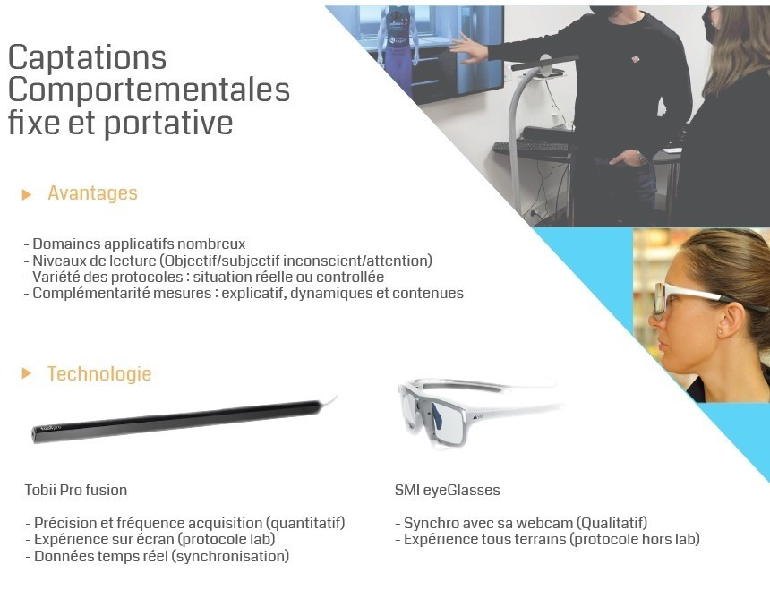
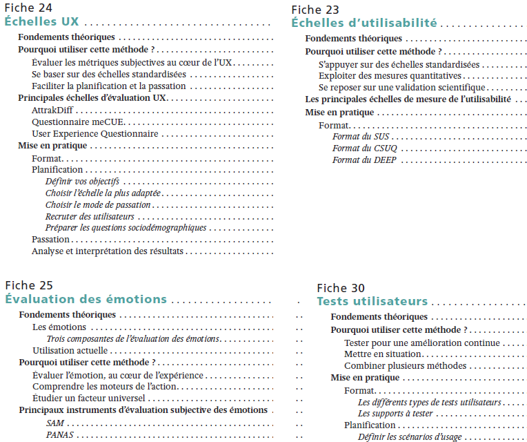
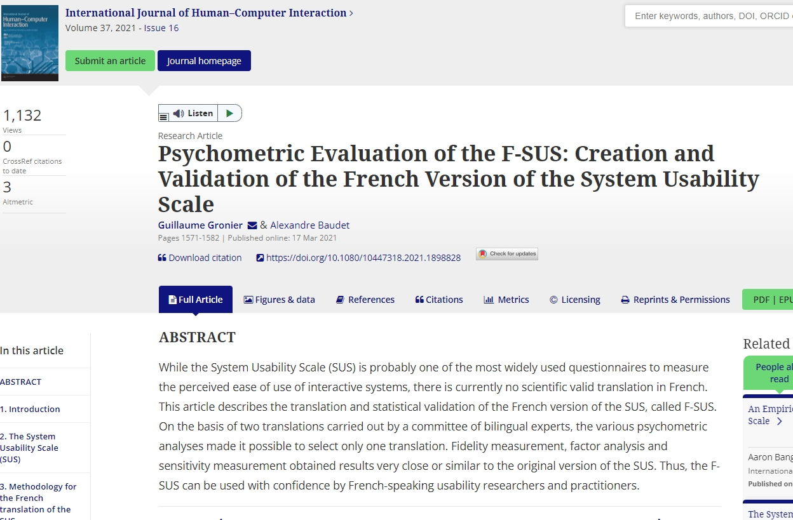
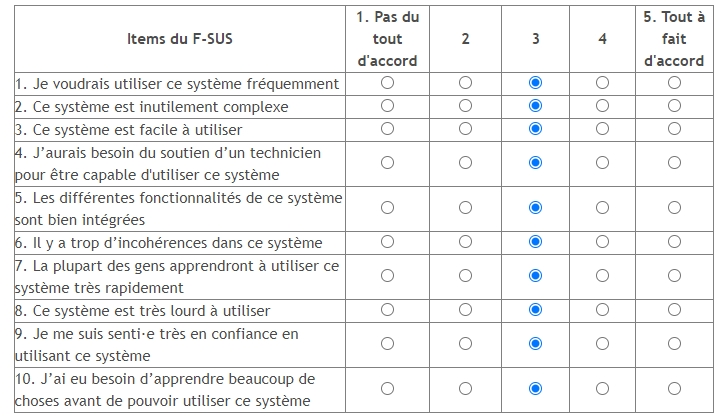

P2AC
-
Sciences du numérique et SHS
Déroulement
P2AC
Interets des outils numériques et des SHS pour la médiation - l'histoire
Concevoir (du contenu numérique) et mesurer (démarche centrée utilisateur)
Essai d'un outil numérique et un outil de mesure
P2AC
Spécialisée en Sciences Humaines et Sociales (psychologie, marketing, économie, etc.)Compétences et outils (informatiques, électroniques et numériques) pour l'analyse des comportements humains
Conçoit des environnements (réels, virtuels et mixtes) contrôlés et des outils informatiques
Mesure la réaction des utilisateurs (comportementale, physiologique, cognitive, etc.)
Concevoir (exemple de la RV)

Mesurer (exemple du tracking regard)

Quelques projets hébergés par la P2AC
Mesurer pour concevoir (Numérique)
Utiliser la réponse d'un utilisateur pour developper (un produit, un service, un algo, etc.).
Concevoir pour mesurer (SHS)
Utiliser la technologie pour comprendre l'utilisateur dans sa grande diversité et dans un contexte donné.
Interets des outils numériques et des SHS pour la médiation - l'histoire
Information - archives - médiation et patrimoire
Qu'apporte le numérique dans votre futur métier ?
Qu'apporte la mesure de l'utilisateur dans votre futur métier ?
j'ai pris la mission suivante : valoriser la collection. Médiateur ?
[conception] Valorisation un contenu (patrimoine, histoire) en offrant de l'interaction, de la gamification.
- Augmenter une oeuvre : proposer un contenu original en support
- Interactivité, manipuler pour mieux s'impregner - Comprendre --> technique ; concepts, prise de decision ; contexte historique, etc...
- Accessibilité : économique (format qui favorise la démocratisation et l'acces), population particulière (personne agée, jeune, personne avec handicap), etc.
Petite galerie Louvre
[mesure] Analyses des visiteurs permet d'amélioration le parcours - l'expérience
- Evaluer un contenu, une oeuvre, un parcours par l'analyse comportementale en vue de l'améliorer (visite, consommation, pédagogique, etc.)
Processus cyclique : mise en valeur d'une oeuvre, d'une archive, etc.
--> analyse des utilisateurs - visiteurs
--> amélioration de l'oeuvre, etc, etc.
Importance de définir les besoins ; de penser la mise en valeur - d'évaluer les implémentations - puis de recommencer ou pas si attentes ok.
Attention à ne pas avoir l'effet inverse : le numérique n'est pas forcement pertinent, peut provoquer un rejet, etc.
Concevoir et mesurer : la démarche centrée utilisateur
Conception centrée utilisateur : méthodologie de conception d'une interface, d'un produit, d'un contenu en prennant en compte les besoins et retours des utilisateurs

- 1 définition des besoins (quel public, handicap, accessibilité...) Entretiens, focus group, questionnaires, etc.
- 2 conception ou coconception - technologie numérique : quelles technos, pour faire quoi, qu'est-ce que ça implique.
en amont : maquettes, story telling, etc.
utiliser la techno que si necessaire pour atteindre un besoin
- 3 évaluation (ergo physique, cognitive, utilisabilité...)
- Comportementale : performance, eyetracker, EMG, expression faciale, capture du mouvement, etc.
- Physiologique : respiration, conductance cutanée, ECG, EEG, etc.
- Psychologique/cognitive (subjective) : personnalité, utilisabilité, émotions, charge de travail, etc.
Focus evaluation


- Echelle UX (pragmatique et hédonique)


- Echelle d'utilisabilité (pragmatique)  
autres exemples : analyse comportementale avec eyetracker, vidéo...
Position du regard (fixe)
Analyse des expressions faciales